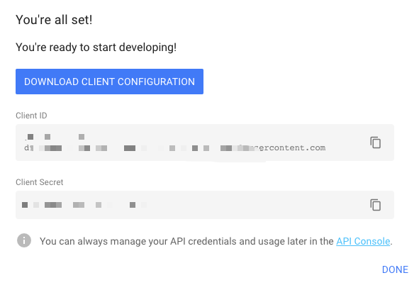

前期准备
1、打开google sheet，国内开发人员，需要自行解决“网络问题”。注册Google账号如过已有账号就直接登录
2、新建1份sheet文件，随便写点数据，一会我们就要操作这份文件。
记住这个URL地址：https://docs.google.com/spreadsheets/d/******************/edit#gid=0
因为我们下一步就要从URL地址中来获取spreadsheetId。也就是工作表的id
3、获取spreadsheetId
spreadsheetId就是编辑sheet页面时，网址中“/d/”与“/edit”之间的值。
4、sheetId
就是#git=后面的值。在上面这个URL中是0
5、打开quickstart页面
点击下方的 ENABLE THE GOOGLE SHEETS API
在弹窗中点击“DOWNLOAD CLIENT CONFIGURATION”下载credentials.json文件

{
"installed": {
"client_id": "",
"project_id": "google-sheet",
"auth_uri": "https://accounts.google.com/o/oauth2/auth",
"token_uri": "https://oauth2.googleapis.com/token",
"auth_provider_x509_cert_url": "https://www.googleapis.com/oauth2/v1/certs",
"client_secret": "",
"redirect_uris": [
"urn:ietf:wg:oauth:2.0:oob",
"http://localhost"
]
}
}
Google授权
为了看起来直观，减少代码量，我们以python代码为例。
首先安装python的google sheet依赖包
google-api-python-client google-auth-httplib2 google-auth-oauthlib
唤起google授权
新建python文件quickstart.py，复制站点的python quickstart代码。
将json文件放在quickstart.py同目录下，执行python quickstart.py。
程序会自动唤起浏览器，访问授权页面。如果没唤起也不要着急，在控制台有打印URL地址，复制后在浏览器打开即可。
我已经登录了，没有登录会有登录页面。选择授权哪个账号。
咦？怎么只认证查看的权限？
不要着急，我们调整一下就可以了：
#将
SCOPES = ['https://www.googleapis.com/auth/spreadsheets.readonly']
#修改为：
SCOPES = ['https://www.googleapis.com/auth/spreadsheets']
Google API开发中具体有哪些SCOPES可选可以查看下面这个地址:
有哪些scope可以查看https://developers.google.com/identity/protocols/googlescopes
我们重新授权（如果前面点击过允许按钮，即：已经授过权了，则需要先删除，quickstart.py目录下的token.pickle文件）
操作完后页面会提示The authentication flow has completed, you may close this window.整个授权动作就完成了。
完成授权动作后会在quickstart.py目录下的token.pickle文件
从源代码，可以看出，我们获取到token.pickl文件后，每次都是从token.pickl文件中读取token。无需再次授权。
注意
如果发现网页可以访问，但是代码一直执行超时。原因是解决了浏览器的“网络问题”，根据方式不同，终端可能需要额外处理“网络问题”。